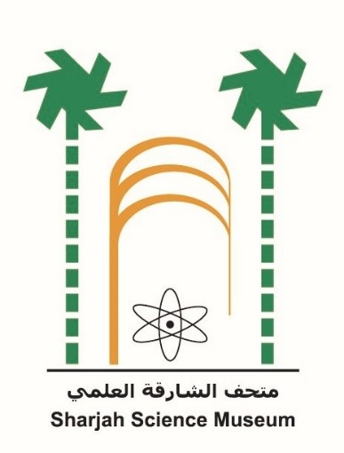

Overview
Sharjah Maritime Museum, initially opened on April 9, 2003, in Al Mareijah and later relocated to Al Khan in 2009, offers a fascinating glimpse into Sharjah's rich maritime heritage. The museum showcases the significance of marine life in the development of Sharjah through exhibits on pearl hunting, fishing, and maritime trade. Visitors can explore models of traditional wooden dhows, pearl fishing boats, diving tools, and fishing equipment, all of which highlight the essential role the sea played in the daily lives of Sharjah's residents for over six thousand years.
Through its detailed exhibits, the museum provides a comprehensive understanding of Sharjah's maritime traditions, including ancient fishing methods, maritime songs, and long commercial voyages. The displays emphasize the deep connection between the sea and the people of Sharjah, who relied on it for food, water, and trade. The museum is a key part of Sharjah's efforts to preserve and document its marine heritage, offering valuable insights into the region's history and culture.

Contact Details
- Sharjah Maritime Museum
- UAE
- Sharjah
- info@smd.gov.ae
- +971 6 522 2002
How to get there?
Sharjah Maritime Museum is located in Al Khan, adjacent to Sharjah Aquarium.
Check Shrjah's Museums
